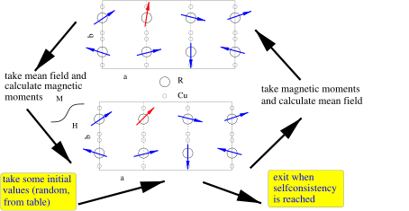
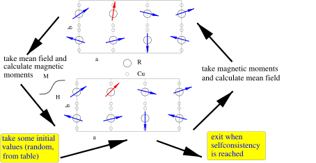

Next: How to generate and Up: McPhase USERS MANUAL Previous: Output Files - mcphas.qvc,phs,sps,mf,fum,j1...,xyt,hkl Contents Index
In order to calculate neutron diffraction and resonant magnetic Xray scattering
at a specified temperature and magnetic field you can use the module mcdiff.
An input file mcdiff.in for this program can be easily created from
the output file mcphas.sps by the program setup_mcdiff_in
(in mcdiff.in structural data of non magnetic atoms and wavelength
and maximal angle have to be edited).
11
mcdiff then calculates neutron reflection and intensity list.
Miller indices always refer to the lattice
 , which
is the reciprocal lattice of
as defined by lattice
parameters  and angles
, which
is the reciprocal lattice of
as defined by lattice
parameters  and angles
 .
.
Here follows an example input file (see examples/ndcu2b_new/mcdiff.in):
# this file is the input file read by program mcdiff version 5.6 Mon Oct 21 18:19:08 2024
#<!--mcdiff.mcdiff.in>
#***************************************************************
# mcdiff is a program for the calculation of elastic
# neutron diffraction and resonant magnetic Xray scattering
# reference: M. Rotter and A. Boothroyd PRB 79 (2009) 140405R
#***************************************************************
# this input file contains 4 sections corresponding to different
# groups of parameters
#
# - all lines have to start with a # sign with the exception of
# the lines containing atomic positional parameters
# - the other parameters have to be defined in the corresponding
# section by statements such as parameter=value
# - the sequence of the parameters within a section is arbitrary
#
#
# %SECTION 1% OVERALL PARAMETERS
#
#! lambda = 2.4 wavelength (A)
#
#! thetamax = 10 maximum bragg angle (deg)
#
#! ovalltemp= 0 overall temperature factor (A^2)
# ...I ~ EXP(-2 * ovalltemp * sintheta^2 / lambda^2)
# relation to other notations:
# ovalltemp = Biso = 8 pi^2 Uiso^2
#
#! lorentz=0 type of lorentzfactor to be used
# 0.....no lorentzfactor
# 1.....neutron powder flat sample
# 2.....neutron powder cylindrical sample
# 3.....neutron single crystal
# 4.....neutron TOF powder cyl. sample - d-pattern log scaled
# 5.....neutron TOF powder cyl. sample - d-pattern normal scaled
#
# out* controls the type of output in mcdiff.out
#!out0=-1 0..short header, 1...standard header, 2... long header in mcdiff.out
# (a negative value triggers calculation of magnetic xray scattering)
#
#! nofoutputcolumns=12 number of columns in output file mcdiff.out
# choose out* to set type of desired output in column 1 to 12
# (default is h k l d Q 2theta Inuc Imag Itot)
#
#!out1=31 out2=32 out3=33 out4=37 out5=38 out6=39 out7=27 out8=28 out9=29 out10=1 out11=0 out12=30
#
# ... in out*=n the numbers n have the following meaning:
# 0....LF #
# 1....|NSF|[b] #
# 2....Re(NSF)[b] #
# 3....Im(NSF)[b] #
# 4....|MSF| #
# 5....|MSF.P| #
# 6....Re(MSF.P) #
# 7....Im(MSF.P) #
# 8....|MSFdip| #
# 9....|MSFdip.P| #
# 10....Re(MSFdip.P) #
# 11....Im(MSFdip.P) #
# 12....angl(Q,P)[°] #
# 13....i(MSFxMSF*).P #
# 14....I+ #
# 15....I- #
# 16....I+/I- #
# 17....i(MSFxMSF*)dip.P #
# 18....Idip+ #
# 19....Idip- #
# 20....Idip+/Idip- #
# 21....2*|MSF.P|/sin^2(angl(Q,P) #
# 22....2*|MSFdip.P|/sin^2(angl(Q,P) #
# 23....2|NSF|sqrt(4PI/3.65)(|g|-sqrt(g^2-1/sin(angl(Q,P))))_with_g=(1+I+/I-)/(1-I+/I-) #
# 24....2|NSF|sqrt(4PI/3.65)(|g|+sqrt(g^2-1/sin(angl(Q,P))))_with_g=(1+I+/I-)/(1-I+/I-) #
# 25....2|NSF|sqrt(4PI/3.65)(|g|-sqrt(g^2-1/sin(angl(Q,P))))_with_g=(1+Idip+/Idip-)/(1-Idip+/Idip-) #
# 26....2|NSF|sqrt(4PI/3.65)(|g|+sqrt(g^2-1/sin(angl(Q,P))))_with_g=(1+Idip+/Idip-)/(1-Idip+/Idip-) #
# 27....Inuc(2t) #
# 28....Imag(2t) #
# 29....Itot(2t) #
# 30....Imag_dip(2t) #
# 31....h #
# 32.... k #
# 33.... l #
# 34....d[A] #
# 35....|Q|[1/A] #
# 36....2theta #
# 37....Qi[1/A] #
# 38....Qj[1/A] Qi Qj Qk are euclidean components of scattering vector#
# 39....Qk[1/A] with j||b, k||(a x b) and i normal to k and j#
# 40....T[K] #
# 41....Ha[T] #
# 42....Hb[T] #
# 43....Hc[T] #
# 44....hprim #
# 45....kprim #
# 46....lprim #
# 47....Itotdip(2t) #
#
# In the above the intensities I+ and I- are the intensities in a polarised neutron
# experiment with incident polarisation up (+) or down (-):
# I+-=LF exp(-OTF Q^2/8pi^2)
# [ |NSF/NB|^2 + 3.65/4pi (|MSF|^2-+i(MSF x MSF*).P)/NB^2
# +- sqrt(3.65/4pi)/NB^2 (NSF (MSF*.P) + NSF* (MSF.P)]
# LF ..... Lorentzfactor
# MSF ..... magnetic structure factor
# NSF ..... nuclear structure factor
#
#
# For some of the above options we need the
#! Pa= 0.0000 Components of Polarisation Vector in terms of lattice vectors P=(Pa * a + Pb * b + Pc *c)
#! Pb= 0.0000 Note: the length of P, i.e. |P| indicates the degree of beam polarisation (|P|<=1)
#! Pc= 0.1045
#
#
# %SECTION 2% LIST OF NONMAGNETIC ATOMS IN CRYSTALLOGRAPHIC UNIT CELL
#
#
#! natcryst=32 number of nonmagnetic atoms in primitive crystalographic unit cell
#
# it follows a list of natcryst lines with nonmagnetic atoms
# ... notes: - if an occupancy other than 1.0 is needed, just reduce
# the scattering length linear accordingly
# - Debye Waller Factor notation: sqr(Intensity) ~ structure factor ~
# ~sum_n ()n exp(-2 DWFn sin^2(theta) / lambda^2)=EXP (-Wn),
# relation to other notations: 2*DWF = B = 8 pi^2 <u^2>, units DWF (A^2)
#
#! use_dadbdc=1
# - 0 means: da db and dc are not used by the program (unless you enter a line #! use_dadbdc=1),
# dr1,dr2 and dr3 refer to the primitive lattice given below
# Real Imag[scattering length(10^-12cm)] da(a) db(b) dc(c) dr1(r1) dr2(r2) dr3(r3) DWF(A^2)
0.34490 0.00000 0.16220 0.32440 0.57620 0.16220 0.32440 0.57620 0.00000
0.34490 0.00000 0.67560 0.83780 0.57620 0.67560 0.83780 0.57620 0.00000
0.34490 0.00000 0.16220 0.83780 0.57620 0.16220 0.83780 0.57620 0.00000
0.34490 0.00000 0.83780 0.67560 0.07620 0.83780 0.67560 0.07620 0.00000
0.34490 0.00000 0.32440 0.16220 0.07620 0.32440 0.16220 0.07620 0.00000
0.34490 0.00000 0.83780 0.16220 0.07620 0.83780 0.16220 0.07620 0.00000
0.34490 0.00000 0.32440 0.16220 0.42380 0.32440 0.16220 0.42380 0.00000
0.34490 0.00000 0.83780 0.67560 0.42380 0.83780 0.67560 0.42380 0.00000
0.34490 0.00000 0.83780 0.16220 0.42380 0.83780 0.16220 0.42380 0.00000
0.34490 0.00000 0.67560 0.83780 0.92380 0.67560 0.83780 0.92380 0.00000
0.34490 0.00000 0.16220 0.32440 0.92380 0.16220 0.32440 0.92380 0.00000
0.34490 0.00000 0.16220 0.83780 0.92380 0.16220 0.83780 0.92380 0.00000
0.34490 0.00000 0.56370 0.12740 0.25000 0.56370 0.12740 0.25000 0.00000
0.34490 0.00000 0.87260 0.43630 0.25000 0.87260 0.43630 0.25000 0.00000
0.34490 0.00000 0.56370 0.43630 0.25000 0.56370 0.43630 0.25000 0.00000
0.34490 0.00000 0.43630 0.87260 0.75000 0.43630 0.87260 0.75000 0.00000
0.34490 0.00000 0.12740 0.56370 0.75000 0.12740 0.56370 0.75000 0.00000
0.34490 0.00000 0.43630 0.56370 0.75000 0.43630 0.56370 0.75000 0.00000
0.70300 0.00000 0.50000 0.00000 0.00000 0.50000 0.00000 0.00000 0.00000
0.70300 0.00000 0.00000 0.50000 0.00000 0.00000 0.50000 0.00000 0.00000
0.70300 0.00000 0.50000 0.50000 0.00000 0.50000 0.50000 0.00000 0.00000
0.70300 0.00000 0.50000 0.00000 0.50000 0.50000 0.00000 0.50000 0.00000
0.70300 0.00000 0.00000 0.50000 0.50000 0.00000 0.50000 0.50000 0.00000
0.70300 0.00000 0.50000 0.50000 0.50000 0.50000 0.50000 0.50000 0.00000
0.34490 0.00000 0.33330 0.66670 0.01160 0.33330 0.66670 0.01160 0.00000
0.34490 0.00000 0.66670 0.33330 0.51160 0.66670 0.33330 0.51160 0.00000
0.34490 0.00000 0.66670 0.33330 0.98840 0.66670 0.33330 0.98840 0.00000
0.34490 0.00000 0.33330 0.66670 0.48840 0.33330 0.66670 0.48840 0.00000
0.34490 0.00000 0.00000 0.00000 0.25000 0.00000 0.00000 0.25000 0.00000
0.34490 0.00000 0.00000 0.00000 0.75000 0.00000 0.00000 0.75000 0.00000
0.70300 0.00000 0.00000 0.00000 0.00000 0.00000 0.00000 0.00000 0.00000
0.70300 0.00000 0.00000 0.00000 0.50000 0.00000 0.00000 0.50000 0.00000
#
#
# %SECTION 3% DESCRIPTION OF THE LATTICE
#
#
# Note: what follows here may directly be taken from the output of program spins
# (file spins.out) or charges (file charges.out)
# -----------------------------------------------------------------------------
#
# lattice constants (A) and angles
#! a=8.8142 b=8.8142 c=9.5692 alpha= 90 beta= 90 gamma= 120
#
# primitive lattice vectors
#! r1a= 30.533248 r2a= -0.000052 r3a= -0.000000
#! r1b= -17.628396 r2b= 35.256701 r3b= -0.000000 primitive lattice vectors (a)(b)(c)
#! r1c= 0.000000 r2c= 0.000000 r3c= 9.569378
#
# - coordinate system ijk defined by j||b, k||(a x b) and i normal to k and j
#! strain tensor (optional): eps1=-2.042e-06=epsii eps2=-2.812e-06=epsjj eps3=1.865e-05=epskk eps4= 0=2epsjk eps5= 0=2epsik eps6=-1.487e-06=2epsij
#
#
# %SECTION 4% DESCRIPTION OF MAGNETIC UNIT CELL AND LIST OF MAGNETIC ATOMS
#
#
# here follows the description of the magnetic unit cell with respect
# to the primitive crystallographic unit cell:
# 'nr1', 'nr2', 'nr3' ...the crystallographic unit cell has to be taken
# nr1 nr2 and nr3 times along r1 r2 and r3,
# respectively to get magnetic unit cell
# 'nat' denotes the number of magnetic atoms in magnetic unit cell
#
# Temperature, External Magnetic Field: Magnetic Unit Cell
#! T=2 K Ha=0 T Hb= 0 T Hc= 0 T: nr1=4 nr2=4 nr3=1 nat=96
#
#
# It follows a list of nat lines with to describe the magnetic moment configuration
# Notes:
# 'atom-filename' means the single ion property filename of this magnetic atom:
# -it must contain the Formfactor Coefficients (e.g. see international tables)
# Lande factor
# Neutron Scattering Length (10^-12 cm)
# -it may contain a Debey Waller Factor
# 'da' 'db' and 'dc' are not used by the program (unless you enter a line #! use_dadbdc=1)
# 'dr1','dr2' and 'dr3' refer to the primitive lattice given below
# 'Ma','Mb','Mc' denote the magnetic moment components in Bohr magnetons
# in case of non orthogonal lattices instead of Ma Mb Mc the components Mx My Mz
# have to be given, which refer to an right handed orthogonal coordinate system
# defined by y||b, z||(a x b) and x normal to y and z
# <Sa> <Sb> <Sc> <La> <Lb > <Lc> (optional) denote the spin and orbital angular momentum components
# 'mf1' 'mf2' 'mf3' (optional line, used to go beyond dipole approx for formfactor)
# denote the corresponding exchange fields in meV
#
#{atom-file} da[a] db[b] dc[c] dr1[r1] dr2[r2] dr3[r3] <Ma> <Mb> <Mc> [mb] [optional <Sa> <Sb> <Sc> <La> <Lb> <Lc> ]
#{corresponding exchange fields [meV]- if passed to mcdiff only these are used for calculation (not the magnetic moments)}
{Gd.sipf} 0.19285 0.38570 0.25000 0.19285 0.38570 0.25000 +5.07780 -4.19680 -1.44390 +2.53890 -2.09840 -0.72190 +0.00000 +0.00000 +0.00000
{Gd.sipf} 0.61430 0.80715 0.25000 0.61430 0.80715 0.25000 +0.09500 +6.38750 -1.78580 +0.04750 +3.19380 -0.89290 +0.00000 +0.00000 +0.00000
{Gd.sipf} 0.19285 0.80715 0.25000 0.19285 0.80715 0.25000 -4.78970 -2.67750 +3.62190 -2.39490 -1.33880 +1.81090 +0.00000 +0.00000 +0.00000
{Gd.sipf} 0.80715 0.61430 0.75000 0.80715 0.61430 0.75000 +5.92820 -2.89990 -0.45460 +2.96410 -1.45000 -0.22730 +0.00000 +0.00000 +0.00000
...
After issuing the command mcdiff the program calculates the following output file results/mcdiff.out:
#{output file of program mcdiff ./results/mcdiff.out input file: mcdiff.in mcdiff version 3.0 Tue Jun 23 %%@
12:51:43 2009
#!<--mcdiff.mcdiff.out-->
#***********************************************************************
#*
#* mcdiff - program to calculate neutron and magnetic xray diffraction
#*
#* reference: M. Rotter and A. Boothroyd PRB 79 (2009) 140405R
#***********************************************************************
#! lattice parameters : a= 4.3843 A b= 4.3843 A c= 2.4194 A alpha=90 beta=90 gamma=90
# prim. unit cell / 4.384 A \ / 0.000 A \ / 0.000 A \
# b1=| 0.000 A | b2=| 4.384 A | b3=| -0.000 A |
# \ -0.000 A / \ 0.000 A / \ 4.839 A /
#! Wavelength=0.9 A number of atoms: 4
#! T= 2 K Ha= 0 T Hb= 0 T Hc= 0 T
#! Overall temperature factor B=0.3 A^2: Intensity is proportional to exp(-2*B*(sin(theta)/lambda)^2)
# Lorentz Factor: 1 / sin^2(2theta) neutron powder flat sample
#
# Lorentz Factor not considered for resonant magnetic xray scattering - F1 and F2 transition intensities %%@
calculated
# according to fRMXS as given in equation (2) of Longfield et al. PRB 66 054417 (2002) and maximized with %%@
respect to azimuth.
#
#! nofatoms=4 atoms in unit cell: List of atomic positions dr1 dr2 dr3, moments m scattering lengths sl,
# Debye Waller factor (sqr(Intensity)~|NSF| ~sum_i ()i exp(-2 DWFi sin^2(theta) / lambda^2)=EXP (-Wi),
# units DWF [A^2], relation to other notations 2*DWF=B=8 pi^2 <u^2>)
# and Lande factors total angular momentum J (=0 if dipole approximation is used) <j0> and <j2> formfactor
# coefficients
# dr1[r1]dr2[r2]dr3[r3]ma[MuB]mb[MuB]mc[MuB]sl[10^-12cm] DWF[A^2] gJ <j0>:A a B b C %%@
c D <j2>A a B b C c D
# 0.000 0.000 0.000 0.000 0.000 -2.130 0.484+0.000i 0.000 0.857 F(Q)=j0-(1-2/gJ)j2 formfactor for %%@
rare earth/transition metals with gJ=2 0.295 17.685 0.292 6.733 0.431 5.383 -0.019 0.981 18.063 1.841 %%@
7.769 0.991 2.845 0.012
# 0.000 0.000 0.500 0.000 0.000 2.130 0.484+0.000i 0.000 0.857 F(Q)=j0-(1-2/gJ)j2 formfactor for %%@
rare earth/transition metals with gJ=2 0.295 17.685 0.292 6.733 0.431 5.383 -0.019 0.981 18.063 1.841 %%@
7.769 0.991 2.845 0.012
# 0.500 0.500 0.250 0.000 0.000 0.000 0.772+0.000i 0.000 0.000 1.000 0.000 0.000 0.000 0.000 %%@
0.000 0.000 0.000 0.000 0.000 0.000 0.000 0.000 0.000
# 0.500 0.500 0.750 0.000 0.000 0.000 0.772+0.000i 0.000 0.000 1.000 0.000 0.000 0.000 0.000 %%@
0.000 0.000 0.000 0.000 0.000 0.000 0.000 0.000 0.000
#}
#{h k l d[A] |Q|[1/A] 2theta Inuc(2t) Imag(2t) Itot(2t) |NSF| LF Imag_dip(2t) %%@
F1:max-Isigpi azim Ipisig azim Ipipig azim F2:max-Isigpi azim Ipisig azim Ipipig azim |^ma_q| |^mb_q| %%@
|^mc_q| |^ma^2_q||^mb^2_q||^mc^2_q||(^ma*^mb)_q||(^ma*^mc)_q||(^mb*^mc)_q|}
0.000 0.000 0.500 4.8388 1.2985 10.672 0.0000 0.0000 0.0000 0.0000 29.1583 0.0000 %%@
0.010111 270 0.010111 90 0.000000 0 0.000000 360 0.000000 180 0.000000 90 0.0000 0.0000 1.0652 %%@
0.0000 0.0000 0.0000 0.0000 0.0000 0.0000
0.000 0.000 -0.500 4.8388 1.2985 10.672 0.0000 0.0000 0.0000 0.0000 29.1583 0.0000 %%@
0.010111 90 0.010111 270 0.000000 360 0.000000 180 0.000000 360 0.000000 90 0.0000 0.0000 1.0652 %%@
0.0000 0.0000 0.0000 0.0000 0.0000 0.0000
1.000 0.000 0.000 4.3843 1.4331 11.782 0.4935 0.0000 0.4935 0.5760 23.9836 0.0000 %%@
0.000000 0 0.000000 0 0.000000 0 0.013544 314 0.013544 314 0.000571 270 0.0000 0.0000 0.0000 %%@
0.0000 0.0000 2.2691 0.0000 0.0000 0.0000
-1.000 0.000 -0.000 4.3843 1.4331 11.782 0.4935 0.0000 0.4935 0.5760 23.9836 0.0000 %%@
0.000000 0 0.000000 0 0.000000 0 0.013544 314 0.013544 314 0.000571 270 0.0000 0.0000 0.0000 %%@
0.0000 0.0000 2.2691 0.0000 0.0000 0.0000
0.000 1.000 -0.000 4.3843 1.4331 11.782 0.4935 0.0000 0.4935 0.5760 23.9836 0.0000 %%@
0.000000 0 0.000000 0 0.000000 0 0.013544 314 0.013544 314 0.000571 270 0.0000 0.0000 0.0000 %%@
0.0000 0.0000 2.2691 0.0000 0.0000 0.0000
-0.000 -1.000 0.000 4.3843 1.4331 11.782 0.4935 0.0000 0.4935 0.5760 23.9836 0.0000 %%@
0.000000 0 0.000000 0 0.000000 0 0.013544 314 0.013544 314 0.000571 270 0.0000 0.0000 0.0000 %%@
0.0000 0.0000 2.2691 0.0000 0.0000 0.0000
1.000 0.000 0.500 3.2490 1.9339 15.923 0.0000 0.4821 0.4821 0.0000 13.2870 0.4821 %%@
0.775763 0 0.775763 180 0.046891 90 0.000000 98 0.000000 278 0.000000 0 0.0000 0.0000 1.0652 %%@
0.0000 0.0000 0.0000 0.0000 0.0000 0.0000
1.000 0.000 -0.500 3.2490 1.9339 15.923 0.0000 0.4821 0.4821 0.0000 13.2870 0.4821 %%@
0.775763 360 0.775763 180 0.046891 270 0.000000 262 0.000000 82 0.000000 360 0.0000 0.0000 1.0652 %%@
0.0000 0.0000 0.0000 0.0000 0.0000 0.0000
etc ....
-----------------------------------------------------------------------
This reflection list contains the Miller indices, the d-spacing, the scattering vector,
the scattering angle 2 , nuclear and magnetic neutron scattering intensities
and the corresponding structure-, Lorentzfactor. Moreover it contains the
intensities for the different scattering channels of resonant magnetic x-ray scattering,
the intensity is shown together with the azimuth value where it is maximum. In addition,
the absolute value of the Fourier transform of the magnetic moment components in the different
crystal directions and of some products of the moment components is given.
, nuclear and magnetic neutron scattering intensities
and the corresponding structure-, Lorentzfactor. Moreover it contains the
intensities for the different scattering channels of resonant magnetic x-ray scattering,
the intensity is shown together with the azimuth value where it is maximum. In addition,
the absolute value of the Fourier transform of the magnetic moment components in the different
crystal directions and of some products of the moment components is given.